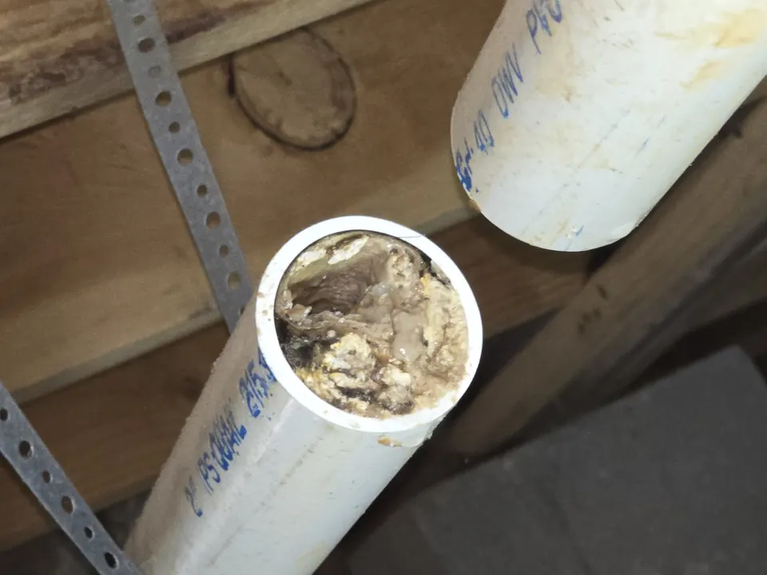

Whether you are dealing with a clogged kitchen sink, a backed-up shower drain, or ongoing drainage issues in multiple areas of your property, our team is ready to help. We deliver reliable service, clear recommendations, and quality workmanship to restore proper flow and keep your plumbing system working as it should.
Schedule Drain Services Today!
Professional Drain Services for Homes and Properties
Drains are a critical part of your plumbing system. When they stop working correctly, everyday tasks can become frustrating and unsanitary. At Angle Stop Plumbing, we provide a wide range of drain services designed to clear blockages, improve flow, and help prevent future problems.

Our drain services may include:
- Drain cleaning
- Clogged drain repair
- Slow drain solutions
- Kitchen drain cleaning
- Bathroom drain cleaning
- Shower and tub drain service
- Toilet drain clearing
- Floor drain cleaning
- Main drain line service
- Preventive drain maintenance
We work to identify the source of the problem and recommend the right solution based on the condition of your plumbing system.
Signs You May Need Professional Drain Services
Drain issues often begin with warning signs that should not be ignored. You may need professional drain services if you notice:
- Water draining slowly from sinks, tubs, or showers
- Recurring clogs in the same drain
- Gurgling noises coming from drains or toilets
- Foul odors from sinks or floor drains
- Standing water in tubs, showers, or sinks
- Water backing up into other fixtures
- Multiple drains clogging at the same time
- Frequent need for plunging or drain cleaners
These symptoms can point to anything from a localized blockage to a larger issue in the main drain line.
Common Causes of Drain Problems
At Angle Stop Plumbing, we handle drainage issues caused by a wide range of problems, including:
- Grease and food buildup in kitchen drains
- Hair and soap residue in bathroom drains
- Foreign objects lodged in pipes
- Mineral buildup restricting flow
- Tree root intrusion in underground drain lines
- Pipe damage or deterioration
- Main line blockages
- Poor drain design or installation
A proper diagnosis is important because the right repair depends on the real cause of the issue, not just the visible symptom.
Our Drain Service Process
We take a straightforward, professional approach to solving drain problems.
- Inspect the drain issue to understand the location and severity of the blockage.
- Identify the cause of the problem, whether it is buildup, obstruction, or pipe damage.
- Recommend the right service based on the condition of the drain and plumbing system.
- Clear or repair the drain using proven methods and quality equipment.
- Test the system to make sure water is flowing properly again.
Our goal is to provide effective drain solutions that restore performance and help reduce the chance of repeat issues.
Drain Cleaning for Kitchens, Bathrooms, and Main Lines
Different drains face different types of clogs. Kitchen drains often struggle with grease, soap, and food debris. Bathroom drains commonly collect hair, toothpaste, and soap buildup. Main drain lines may become blocked by roots, scale, waste buildup, or other obstructions that affect multiple fixtures at once.
Angle Stop Plumbing provides drain cleaning services for all of these issues, helping restore normal drainage and prevent more serious plumbing problems from developing.
Why Professional Drain Service Matters
Store-bought drain cleaners may offer a temporary fix, but they often do not solve the underlying issue. In some cases, repeated chemical use can even damage pipes. Professional drain service provides a more reliable way to remove blockages and evaluate whether there is a deeper plumbing problem that needs attention.
With professional service, you get:
- More accurate diagnosis
- More complete clog removal
- Reduced risk of pipe damage
- Better long-term drain performance
- Help identifying recurring plumbing issues
Why Choose Angle Stop Plumbing for Drain Services?
When you need a dependable plumber for drain services, experience and responsiveness matter. Customers choose Angle Stop Plumbing because we provide:
- Prompt service for urgent drain problems
- Thorough diagnosis and effective solutions
- Honest recommendations and clear communication
- Quality workmanship and dependable plumbing care
- Drain services tailored to residential and property needs
We understand how disruptive drain problems can be, and we work hard to restore your plumbing quickly and professionally.
Schedule Drain Services With Angle Stop Plumbing
If you are dealing with a clogged, slow, or backed-up drain, contact Angle Stop Plumbing for professional drain services. Our team is ready to identify the issue, clear the blockage, and help keep your plumbing system flowing properly.
Trust Angle Stop Plumbing for reliable drain cleaning, drain repair, and responsive plumbing service.